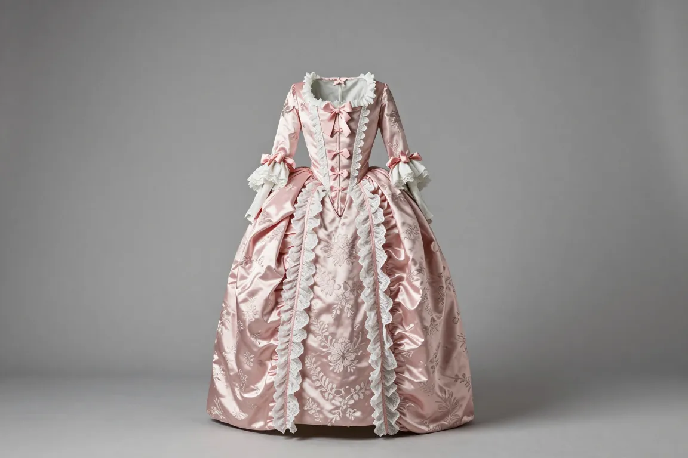

мода · 1720–1789 · также: Роб а-ля франсез, Придворное платье Людовика XV, Платье со складкой Ватто
Придворное платье Людовика XV: шёлковое платье с широкими бёдрами, складками Ватто на спине, кружевными оборками и цветочной парчой, которое копировали при дворах Европы.

Главная идея
Придворное платье показывает ранг шириной юбки, весом шёлка и часами ручной работы в отделке.
Принципы дизайна
Держите юбку на боковых обручах шириной 1 м на день и до 3 м для двора.
Корсет на косточках придаёт торсу жёсткую конусную форму; шнуруйте корсет туго, чтобы спина оставалась прямой.
Кройте спинку двумя коробчатыми складками, свободно падающими от шеи до пола (складка Ватто).
Раскрывайте перед юбки над нижней юбкой из того же шёлка или контрастного шёлка.
Заполняйте V корсажа плащем-стомахером и закрывайте его бантами или вышивкой.
Заканчивайте рукав у локтя двумя-тремя ярусами кружевных оборок.
Выбирайте мелкие цветочные букеты на бледном фоне; держите рисунок парчи в масштабе юбки.
Антипаттерны
Прямая узкая юбка без обручей
Тяжёлая тёмная простая шерсть для придворного платья